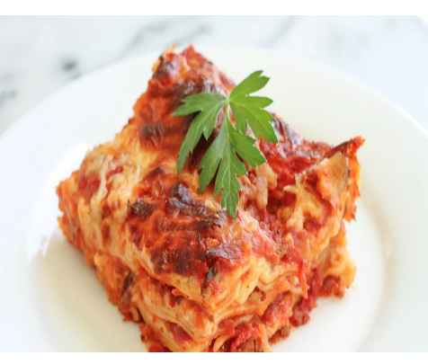

Today I will be teaching you guys how to prepare a basic lasagna dish in the American way and also how to make the meat sauce too. Since the lasagna recipe has changed a bit over the years mine might be a little different from your regular cooked lasagna. So, watch and be amazed by this recipe!!!
Lasagna takes a lot of ingredients, but it also feeds a lot of people.
For the tomato meat sauce:Keep in mind that if you can always just cook up some meat and then pour a couple jars of tomato sauce over it, so don't worry about it if you look at the ingredients and wonder what you've gotten yourself into.
For the rest of the lasagna:Prep work and browning the meat!
Roughly dice the onion, and mince as much garlic as you want. I used quite a bit as you can see.
Once you've got the veggies prepped, film your sauce pan with olive oil. Heat the pan over medium and cook the ground beef and Italian sausage until browned. If a lot of fat seeps out, drain most of it. You need only a few tablespoons of fat to cook the onion and garlic in.
Once you've drained the extra fat, throw in the onions and garlic.
Stir this around for a few minutes over medium heat until the onions become soft. Then add in a few good pinches of Italian seasoning, a pinch of basil, oregano and salt, and a tablespoon or two of tomato paste.
Once you've got the veggies prepped, film your sauce pan with olive oil. Heat the pan over medium and cook the ground beef and Italian sausage until browned. If a lot of fat seeps out, drain most of it. You need only a few tablespoons of fat to cook the onion and garlic in.
Once you've drained the extra fat, throw in the onions and garlic.
Stir this around for a few minutes over medium heat until the onions become soft. Then add in a few good pinches of Italian seasoning, a pinch of basil, oregano and salt, and a tablespoon or two of tomato paste.
Now, open both cans of tomatoes and dump them in. Mix it around for a moment, and bring to a light boil. Watch out for splatters!
Lower the heat to a simmer and cover. Let the sauce simmer for at least a half hour while you do the rest of the prep work.
At this point, if you're using regular lasagna noodles, you'll need to fill a stock pot with water and cook those. I find it's best to cook them for the shortest time listed on the package or a minute or two under so they don't get soggy while the lasagna bakes.
Once they're done, rinse them with cold water using a colander and set them aside. Try to separate them a bit so they stick less later.
if you're using oven-ready noodles, you can worry about them later.
Over the years, I've started combining all my cheese at the beginning - it makes for easier assembly!
Grab out a couple handfuls of parmesan and mozzarella and put them in a small bowl - this will be for topping the lasagna.
Place the ricotta into a large bowl, along with one egg. Add the rest of the parmesan and mozzarella, as well as a couple good pinches of Italian seasoning and basil. Mix this all together with your hands.
Once you're all done with the cheese, double check the sauce and adjust the flavors as necessary. You may need to add salt, sugar or more herbs - just keep adding and testing until it's good for you!
If you're using fresh basil, chop up a handful and throw it in now. Once the basil is in, stir the sauce well and turn off the heat.
Preheat the oven to 375 degrees F / 200 degrees C.
Make sure your cheeses, noodles and sauce are all within easy reach.
Ladle just enough sauce to cover the bottom of the pan. Then place noodles on top of the sauce just to cover, slightly overlapping. (If you're using over-ready noodles, follow the box directions) If they're broken, piece them together as much as possible. Spread 1/3 of the cheese mixture over the noodles.
Now you'll put more sauce over the cheese and then noodles, more cheese, and then sauce again. You repeat the basic build three times.
For the fourth and final level, lay down your cheese mixture and top with the rest of the sauce. Now sprinkle the parmesan and mozzarella you set aside over it.
Now bake at 375 F for 40 minutes - if you're using a metal pan, check after 30 and make sure it's not too dark! If it's starting to get dark on top just pull it out.
Once it's done baking, pull it out and let it sit for a few minutes before cutting into it! Otherwise it will just be hot lasagna lava.
Serve it to a bunch of hungry friends and/or family with warm garlic bread and enjoy!!!
| S/N | FOOD | UTENSILS |
|---|---|---|
| 1 | Noodles | Cooking Pan |
| 2 | Tomatto | Cooking Wooden Spoon |